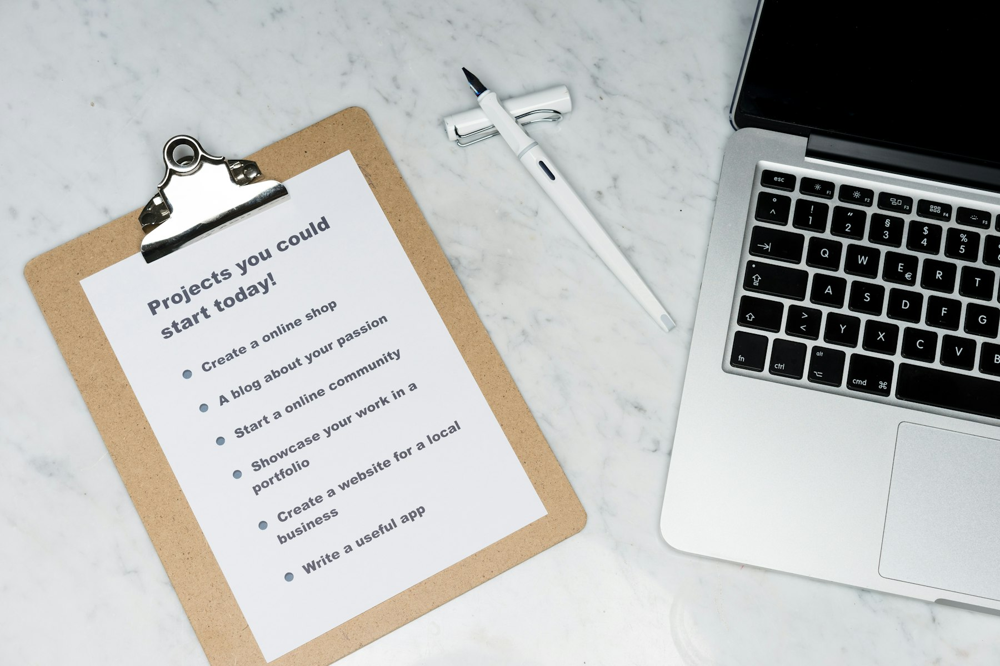

TL;DR
This task prioritization framework is ideal for freelance writers facing tight deadlines.
By systematically ranking and organizing tasks, you can meet deadlines without sacrificing quality and adaptability.
Understanding Your Freelance Landscape
This setup is for freelance writers who often juggle multiple projects with tight deadlines.
In this fast-paced environment, writers face unique challenges such as managing varying client expectations, meeting strict deliverable timelines, and maintaining high-quality output under pressure.
Balancing these demands can lead to burnout or missed deadlines, creating a cycle that is hard to escape.
As freelance writers, it’s crucial to recognize that each project has different requirements, and taking a systematic approach can ease these burdens.
Why Traditional Time Management Falls Short
Traditional time management advice often emphasizes rigid schedules which simply do not fit the dynamic nature of freelance work.
Such frameworks can lead writers to prioritize quantity over quality, pushing them into a treadmill of producing more content without considering the value of that content.
This approach risks diluting your unique voice or, worse, compromising client relationships due to subpar work.
Instead, we need a fluid system that adapts to the unpredictable demands of freelance writing while ensuring quality remains king.
Unveiling the Task Prioritization System
The task prioritization system you're about to learn is structured around a user-friendly workflow.
Imagine a continuous cycle of assessing, ranking, and executing tasks based on their urgency and importance.
The first stage involves identifying all tasks and their respective deadlines.
Next, you'll categorize these tasks into 'urgent' and 'important,' connecting their deadlines to how they impact your overall workflow.
This visual mapping helps you visualize what's on your plate and makes it easier to act decisively, ensuring you always focus on what matters most.
Step-by-Step Setup of Your Prioritization Framework
To set up your prioritization framework, follow these actionable steps: First, list all your tasks alongside their deadlines.
Second, use the Eisenhower Matrix to rank tasks by urgency and importance—place urgent and important tasks in the 'Do First' category.
Third, create daily and weekly task lists based on this ranking, allowing for flexibility.
Regularly revisit this list to adjust as projects evolve.
This simple yet effective step could dramatically improve your ability to meet tight deadlines while delivering quality outputs.
Making Decisions: Rules for Tool Selection
Selecting the right tools to support your prioritization system is integral to its success.
Start by evaluating potential task management tools based on criteria such as ease of use, integration with other apps you use, and flexibility for changes.
Popular choices for freelancers include Trello, Asana, or ClickUp, but the key is selecting one that aligns with your workflow.
A well-chosen tool won't just help you track tasks; it will enhance your overall productivity by keeping everything organized and visible, allowing you to make better decisions on the fly.

Common Pitfalls and Considerations
Even the best systems have traps that can derail your progress.
A common mistake freelancers make is underestimating task durations, which can lead to scrambling at the last minute.
Ignoring your personal productivity patterns is another pitfall; if you know you're most productive in the morning, structure your day to tackle the most challenging tasks then.
Being aware of these tradeoffs can save you time and stress, as it helps you to prepare better and set realistic expectations for what can be accomplished.

Your Prioritization Checklist and When to Adapt the System
Here's a practical prioritization checklist to get you started: 1) List tasks with deadlines, 2) Rank them using the Eisenhower Matrix, 3) Create daily and weekly goals, 4) Review and adjust every week.
Situations requiring flexibility include unexpected urgent tasks, such as an emergency project or client feedback necessitating a major revision.
In these cases, revisit your workflow, prioritize dynamically, and adapt as needed rather than feeling forced to stick to the checklist rigidly.
FAQ
What tools can I use to implement this prioritization system?
For implementing this system, tools like Trello, Asana, and ClickUp can help manage your tasks efficiently.
How can I adjust my priorities if unexpected tasks arise?
You can adjust your priorities by frequently revisiting your task list and using the Eisenhower Matrix to re-rank tasks based on urgency.
What is the most important factor in selecting a task management tool?
The most important factor is its ability to integrate seamlessly with your existing workflows, enhancing visibility and ease of use.
Photo credits
- Photo 1: Beth Jnr on Unsplash (https://unsplash.com/@bthjnr) (https://unsplash.com/photos/black-desk-lamp-on-brown-wooden-table-okUB5th8QtQ)
- Photo 2: REKORD furniture on Unsplash (https://unsplash.com/@drjon) (https://unsplash.com/photos/3-oclock-wall-clock-reading-LXSvAyKKWkU)
- Photo 3: Kelly Sikkema on Unsplash (https://unsplash.com/@kellysikkema) (https://unsplash.com/photos/yellow-sticky-notes-ElF7K4IWcGQ)
- Photo 4: Sara Farnell on Unsplash (https://unsplash.com/@sara_ef) (https://unsplash.com/photos/open-laptop-on-table-beside-guitar-bag-and-hanging-hats-3-Uwcgcba0U)
- Photo 5: Austin Ramsey on Unsplash (https://unsplash.com/@austin__ramsey) (https://unsplash.com/photos/blue-and-black-handle-pliers-beside-brown-wooden-handle-IvzvlKQwjk8)
- Photo 6: Oliver Hale on Unsplash (https://unsplash.com/@4themorningshoot) (https://unsplash.com/photos/two-caution-signages-oTvU7Zmteic)
- Photo 7: Markus Winkler on Unsplash (https://unsplash.com/@markuswinkler) (https://unsplash.com/photos/white-printer-paper-beside-silver-laptop-computer-m-2H2zJQ2wA)